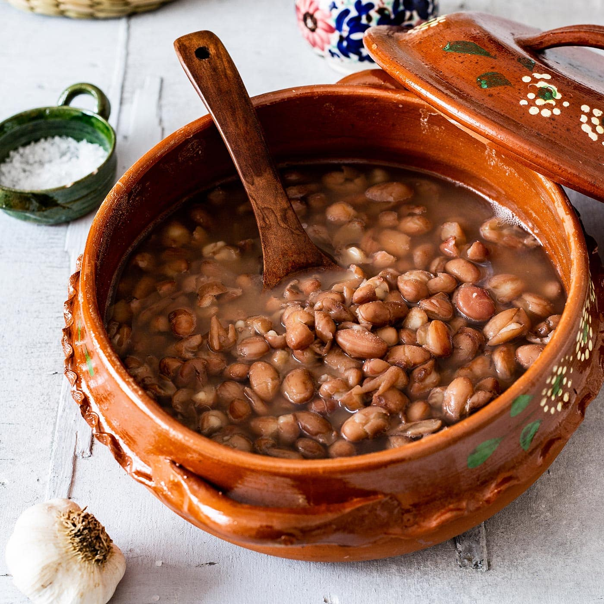

Frijoles de la olla is one of the most basic Mexican side dishes consisting of pinto beans in their broth. Originally, beans were cooked in clay pots with nothing more than some salt. Today, cooks usually add garlic, onions, or ham to frijoles de la olla, accompanying numerous meat and tortilla dishes.
Meal prep time : 2 hours 40 minutes
Servings : 8